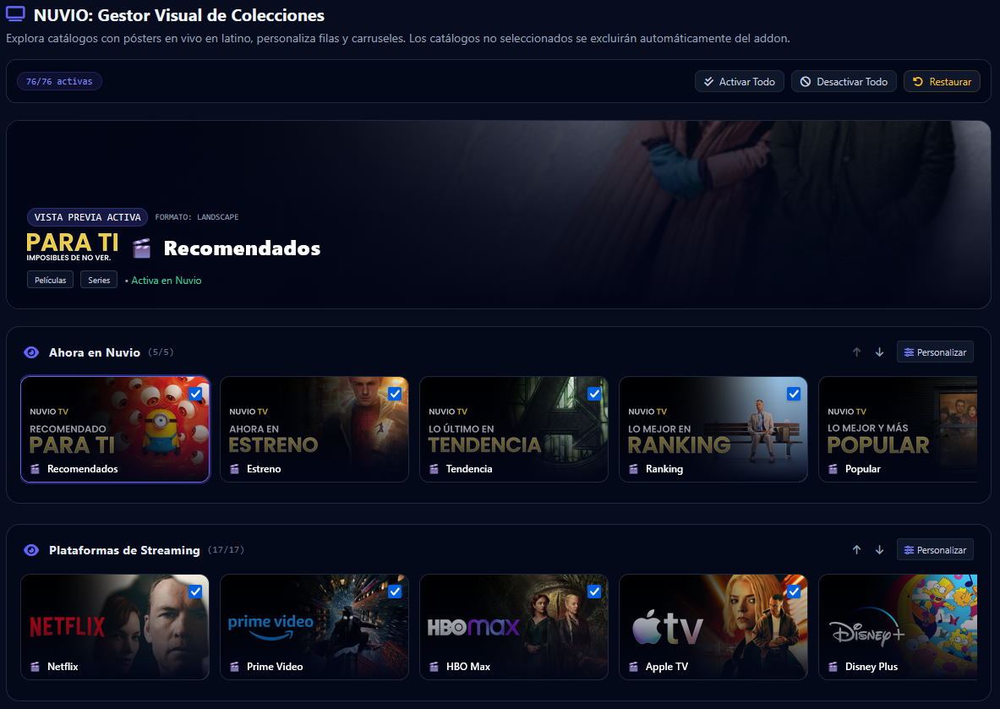

Olvídate de catálogos desordenados en inglés, portadas rotas y configuraciones tediosas. Este asistente organiza tu Nuvio con AIOMetadata, inyecta carátulas 16:9 en alta definición y sincroniza tus perfiles en menos de 2 minutos.

Diseñado especialmente para la comunidad latina que busca orden, estética y cero fricciones técnicas.
Carátulas cinematográficas apaisadas (Ahora en Nuvio, Plataformas de Streaming y Géneros). Todas las imágenes están almacenadas localmente para cargar a 0 ms sin depender de enlaces caídos.
Oculta automáticamente los cientos de catálogos desordenados de AIOMetadata de la pantalla de inicio para mantenerla limpia y optimizada. Solo verás tus colecciones organizadas.
Activa metadatos enriquecidos oficiales en español latino para Smart TV y dispositivos móviles. Sinopsis, actores, directores y calificaciones críticas oficiales sin mezclas en inglés.
¿No quieres poner tu cuenta de Nuvio? ¡No hay problema! Puedes usar el Modo Manual para personalizar tus colecciones visualmente y copiar los JSONs listos para importar tú mismo.
La diferencia entre una configuración desordenada y un entorno optimizado para disfrutar de tu contenido.
Resolvemos tus dudas antes de comenzar.
Sí, es totalmente seguro. Esta aplicación es 100% estática (código abierto en GitHub) y se ejecuta únicamente en tu navegador. Tus credenciales van directamente a los servidores oficiales de Nuvio (api.nuvio.tv) mediante llamadas autenticadas de Supabase. Ningún servidor externo o intermediario almacena ni ve tu contraseña. Y si prefieres no ingresarla, dispones del Modo Manual.
Solo necesitas tu cuenta de Nuvio (o usar el Modo Manual) y una clave API gratuita de TheMovieDatabase (TMDB). Esta clave se solicita en el Paso 4 para activar el enriquecimiento oficial de metadatos en español latino (sinopsis oficiales, actores, directores y puntuaciones) en tu perfil de Nuvio. En el Paso 3 podrás organizar y personalizar todas tus colecciones con cápsulas interactivas al instante, y el asistente te dará el enlace directo para obtener tu clave en 30 segundos si aún no la tienes.
No. En el Paso 2 podrás crear un perfil completamente nuevo (por ejemplo "Latino") o elegir cuál de tus perfiles existentes deseas actualizar. El resto de perfiles de tu cuenta permanecerán intactos.
No, este asistente es un proyecto de código abierto libre (licencia MIT) mantenido por y para la comunidad.
El asistente te guiará paso a paso en 5 sencillas etapas. Puedes cambiar, personalizar o reordenar cada catálogo a tu gusto.